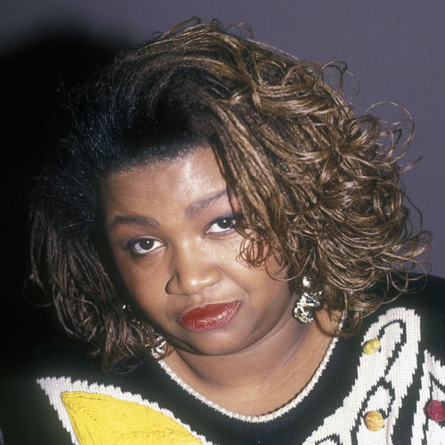

Gwen Guthrie
Gwendolyn Guthrie was an American singer-songwriter and pianist who also sang backing vocals for Aretha Franklin, Billy Joel, Stevie Wonder, Peter Tosh, The Limit and Madonna, among others, and who wrote songs made famous by Ben E. King, Angela Bofill and Roberta Flack. Guthrie is well known for her 1986 anthem "Ain't Nothin' Goin' On but the Rent," and for her 1986 cover of the song "(They Long to Be) Close to You."
Complete Discography & Tracklists (9)
1982 Gwen Guthrie 🎵 0 Tracks
No tracks registered.
1983 Portrait 🎵 0 Tracks
No tracks registered.
2003 The Ultimate Collection: Gwen Guthrie 🎵 14 Tracks
2008 Hot Times 🎵 10 Tracks
2008 Lifeline 🎵 10 Tracks
2015 Good To Go Lover 🎵 0 Tracks
No tracks registered.
2015 Just For You 🎵 0 Tracks
No tracks registered.
2026 In Love 🎵 0 Tracks
No tracks registered.